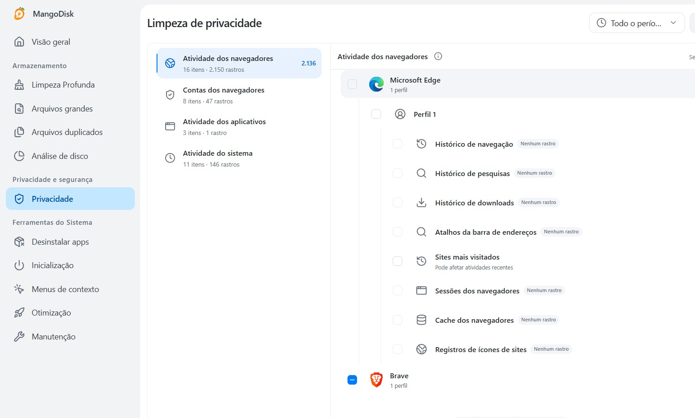

O que o MangoDisk faz
Limpeza profunda
Caches, logs, artefatos de build, modelos de IA e temporários em um só lugar.
Arquivos grandes e duplicados
Encontre o que ocupa espaço e remova duplicatas com seleção segura.
Privacidade
Limpe históricos, cookies e rastros deixados por navegadores e apps.
Segurança primeiro
Varredura somente leitura, prévia, confirmação e histórico de operações.
Capturas de tela



Instalação rápida
Windows: winget install --id MangoDisk.MangoDisk --exact --source winget
Outros sistemas e código-fonte: github.com/RamonMods/MangoDisk